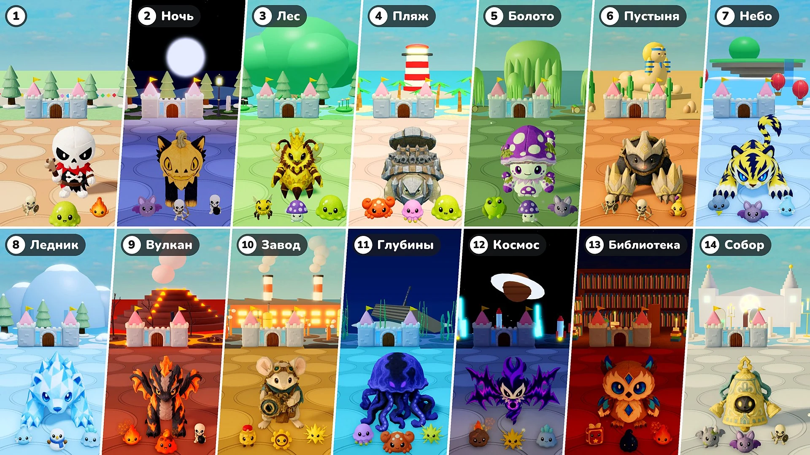

Сезон 2 · Обновление 07 · 10 ноября

Защита замка
- Этапы: Теперь каждые 10 раундов — это этап. Этап 1 — городок, как и раньше; с Этапа 2 каждый этап — это новое место со своим светом и погодой, землёй и украшениями, а также со своими монстрами, элитой и боссами. После последнего места места идут заново, начиная с места Этапа 2.
- Боссы: Ещё один босс каждые 10 раундов → всегда один босс, а вместе с ним входит столько элитных врагов, сколько было дополнительных боссов (1 в раундах 15 и 20, 2 в раундах 25 и 30…). С Этапа 2 боссы и элита — это игрушки этого места. Игрушка «Медокоролева» теперь тоже может быть боссом.
- Элита: Элитные враги теперь в 1,15 раза крупнее. С Этапа 2 их здоровье растёт на 50% за каждый этап, а звёзды, которые они роняют, меняются с 10 на 10 × номер этапа (20 на Этапе 2, 30 на Этапе 3…).
- Новые монстры: В местах появилось 16 новых монстров (Летучая мышь · Краб · Медуза · Ядовитая лягушка · Скорпион · Грозовая туча · Дух инея · Снеговик · Ледяной слизень · Лавовый слизень · Заводной солдатик · Шестерёнка · Метеорит · Книга заклинаний · Чернильная капля · Горгулья). Вкладки «Монстры» и «Боссы» в Энциклопедии теперь разделены по этапам.
- Усиление характеристик: В раунде, где выбирают игрушку, Усиление характеристик больше не предлагается.
- Призванные: Исправлена ошибка, из-за которой Усиления характеристик не действовали на призванных существ. Теперь они действуют на пчёл игрушки «Медокоролева», дерево игрушки «Росточирик» и предмет «Зеркальный двойник» так же, как на игрушки, а Усиление характеристик, выбранное, пока призванное существо на поле, действует сразу.
- Скорость ×2: Рядом с кнопкой паузы появилась кнопка «×2». Нажми её — и бой пойдёт вдвое быстрее; нажми ещё раз, чтобы вернуть обычную скорость. Время на выбор и шаг твоего аватара не меняются. В режиме «Играть вместе» меняется вся игра, кто бы ни нажал.
- Здоровье замка: Полоса здоровья замка стала больше, а числа здоровья стоят прямо рядом с ней.
Этапы и места
Места начиная с Этапа 2, их монстры и боссы. Игрушки, которые приходят как Босс или Большой босс места, приходят и как его элита.
- Этап 2 · Ночь: Летучая мышь · Скелет-лучник · Скелет-подрывник — Босс: Блиссфокс · Пушистик — Большой босс: Дредфокс · Пампкэт
- Этап 3 · Лес: Рабочая пчела · Ядовитый гриб · Слизень — Босс: Шишкоёж · Медоджем — Большой босс: Медокоролева — Элита: Росточирик
- Этап 4 · Пляж: Краб · Медуза · Слизень — Босс: Кокоблин · Камнечерепашка — Большой босс: Рокоблин · Бронечерепаха
- Этап 5 · Болото: Ядовитая лягушка · Ядовитый гриб · Летучая мышь — Босс: Мадпаг · Ядоулитка — Большой босс: Болоторог · Споровичок
- Этап 6 · Пустыня: Скелет-воин · Скелет-лучник · Скорпион — Босс: Бонис · Мягколапка — Большой босс: Боникс · Железнолап
- Этап 7 · Небо: Грозовая туча · Летучая мышь · Дух инея — Босс: Вольтис · Сияница — Большой босс: Вольтигр · Гриффион
- Этап 8 · Ледник: Дух инея · Снеговик · Ледяной слизень — Босс: Гласси · Шардфин — Большой босс: Поларрок · Призмланс
- Этап 9 · Вулкан: Уголёк · Лавовый слизень · Скелет-подрывник — Босс: Фламо · Эшгон — Большой босс: Фламмоникс · Эмбергон
- Этап 10 · Завод: Заводной солдатик · Шестерёнка · Искра — Босс: Маусбол · Шестерёнка — Большой босс: Оптимаус · Обскор
- Этап 11 · Глубины: Медуза · Краб · Искра — Босс: Гидрис · Фрико — Большой босс: Серенис · Абизель
- Этап 12 · Космос: Метеорит · Искра · Ледяной слизень — Босс: Войдрен · Эховинг — Большой босс: Войдлинг · Нойзвинг
- Этап 13 · Библиотека: Книга заклинаний · Чернильная капля · Уголёк — Босс: Мелти · Брайераул — Большой босс: Кэндрик · Кристаул
- Этап 14 · Собор: Горгулья · Летучая мышь · Скелет-воин — Босс: Лилупи · Колокольчик — Большой босс: Радиант · Колоколосс